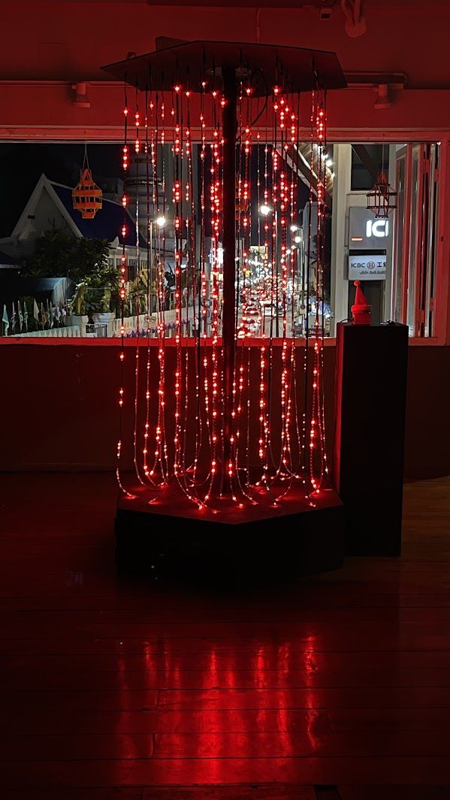
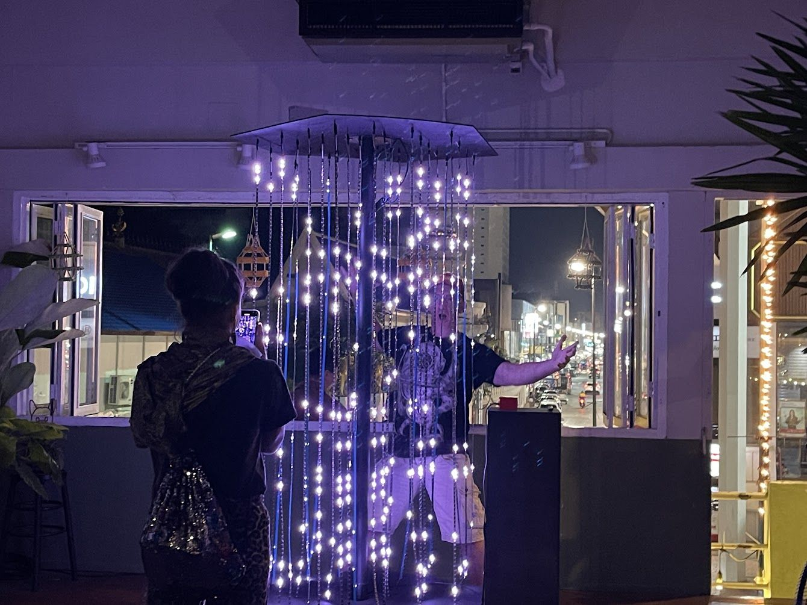

Fundamental particles created by cosmic rays colliding with Earth’s atmosphere pass through us every second, like a “Cosmic Shower” raining down as an invisible, shapeless stream. Though unseen by the naked eye, they embody a profound connection between us and the vast universe. Modern science allows us to perceive the existence of these particles, revealing their presence. This New Year, we invite everyone to make a wish upon these fundamental particles, the building blocks of everything in the cosmos, and channel their energy to propel us forward into 2025. In collaboration with the Thai-IceCube Collaboration at Chiang Mai University, we transform signals from the Cosmic Watch device into an engaging lighting installation,
